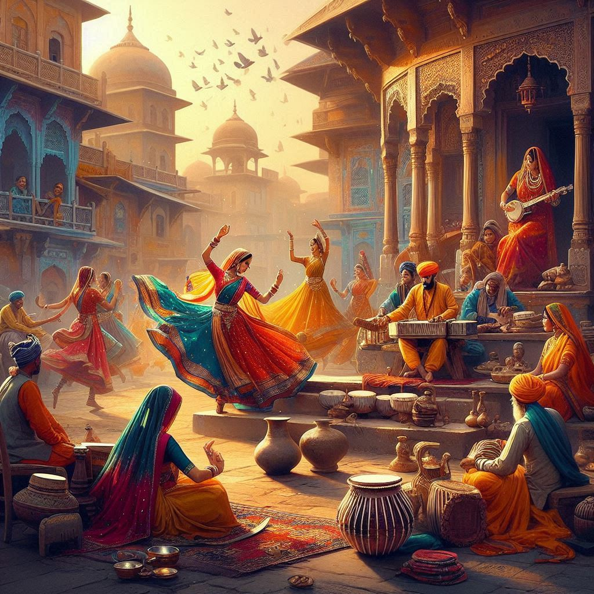

Uttar Pradesh (UP), one of the most populous states in India, has a rich and diverse cultural heritage that reflects its historical significance, traditions, and regional diversity. Here’s an overview of the key aspects of Uttar Pradesh’s culture:
1. Historical Influence
- Ancient Civilization: UP is home to ancient cities like **Varanasi** and **Ayodhya**, significant in Hindu mythology and history. The state has been a center of political power, art, and spirituality for centuries.
- Mughal Legacy: The influence of the Mughal Empire is evident in UP’s architecture, cuisine, and arts. The **Taj Mahal** in Agra is a prime example of Mughal architectural brilliance and a UNESCO World Heritage Site.
2. Festivals
- Diwali: The festival of lights is celebrated with great enthusiasm across the state, marked by the lighting of diyas (lamps), fireworks, and family gatherings.
- Holi: Known as the festival of colors, Holi is celebrated with vibrant festivities, including throwing colored powders and water, singing, and dancing.
- Eid: Celebrated by the Muslim community, Eid features special prayers, feasting, and community gatherings.
- Kumbh Mela: Held every 12 years in **Allahabad** (Prayagraj), this massive religious gathering attracts millions of pilgrims for ritual bathing in the Ganges.
3. Arts and Crafts
- Traditional Handicrafts: UP is known for its exquisite handicrafts, including **Banarasi sarees**, **chikan embroidery** from Lucknow, and **woodwork** from Saharanpur.
- Folk Arts: Traditional art forms like **Kumarika**, **Nautanki**, and **Ramlila** (a theatrical performance based on the Ramayana) showcase UP’s rich folk heritage.
4. Cuisine
- Awadhi Cuisine: Famous for its kebabs, biryanis, and rich gravies, Awadhi cuisine reflects the royal culinary traditions of Lucknow. Dishes like **Tunday Kababi** and **Galouti Kebab** are popular.
- Varanasi Street Food: The city is famous for its chaats, lassi, and sweets like **kheer** and **jalebi**.
- Vegetarian Delights: UP’s cuisine features a variety of vegetarian dishes, including **dal**, **sabzi**, and various types of bread like **roti** and **paratha**.

5. Language and Literature
- Languages: Hindi is the primary language spoken in UP, with various regional dialects like Awadhi, Braj, and Bhojpuri. Urdu is also widely spoken, especially in cities with a significant Muslim population.
- Literature: UP has a rich literary heritage, producing famous poets and writers like **Tulsidas**, **Kabir**, and modern literary figures. The state is also known for its contribution to Hindi and Urdu literature.
6. Religion and Spirituality
- Pilgrimage Sites: UP is dotted with important religious sites for Hindus, Muslims, and Buddhists, including **Varanasi**, **Ayodhya**, **Mathura**, and **Sarnath**.
- Temples and Mosques: The state is home to numerous temples and mosques, reflecting its diverse religious heritage. The **Kashi Vishwanath Temple** and the **Gyanvapi Mosque** in Varanasi are notable examples.
7. Traditional Clothing
- Attire: Traditional attire varies across the state. Men often wear **kurta-pajama**, while women wear **sarees** or **salwar kameez**. The Banarasi saree is particularly famous for its intricate weaving and designs.
8. Music and Dance
- Folk Music: UP has a rich tradition of folk music, including genres like **Thumri**, **Dhrupad**, and **Ghazal**. Instruments like the **harmonium**, **tabla**, and **dholak** are commonly used.
- Dance Forms: Traditional dance forms such as **Kathak**, which originated in the temples of Varanasi, are celebrated for their expressive storytelling and intricate footwork.
Conclusion
Uttar Pradesh's culture is a vibrant tapestry woven from its historical legacies, religious diversity, artistic expressions, and culinary richness. From the spiritual ambiance of its ancient cities to the bustling markets filled with handicrafts and delicious street food, UP offers a unique cultural experience that reflects the essence of India itself.